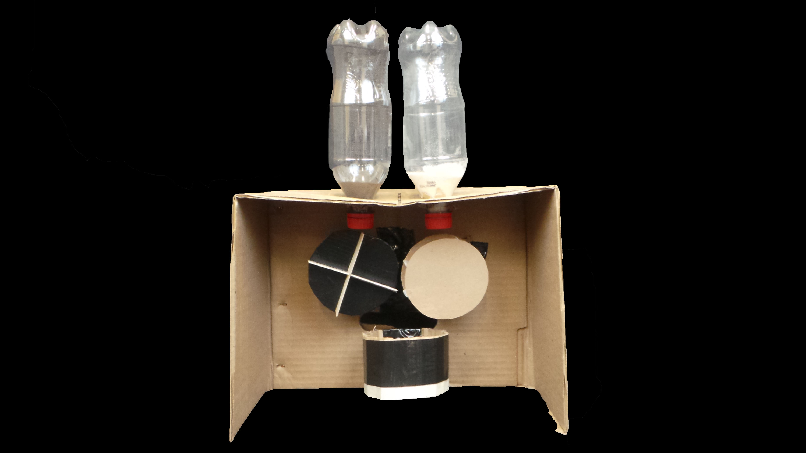
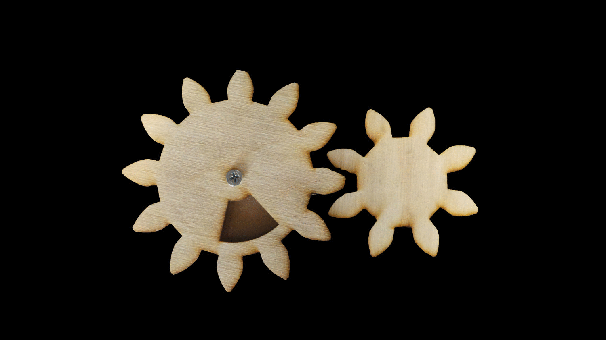
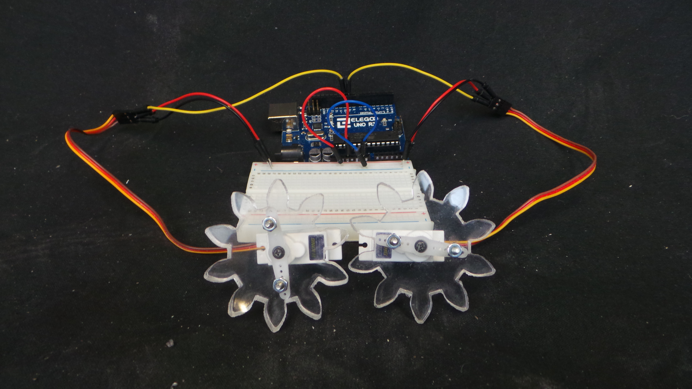
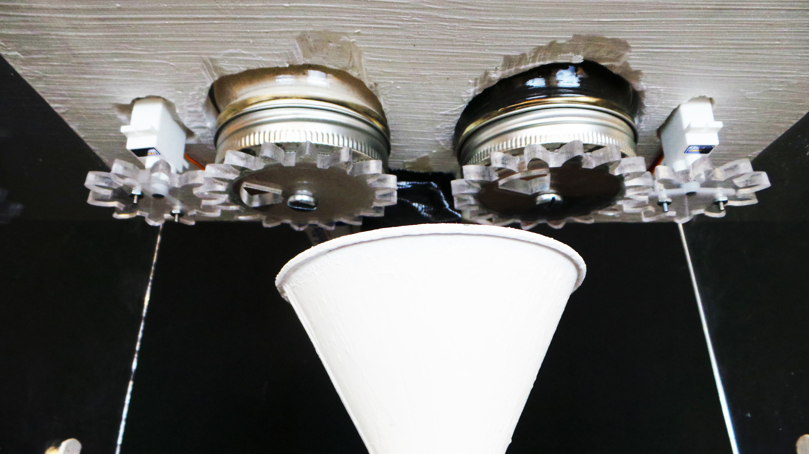
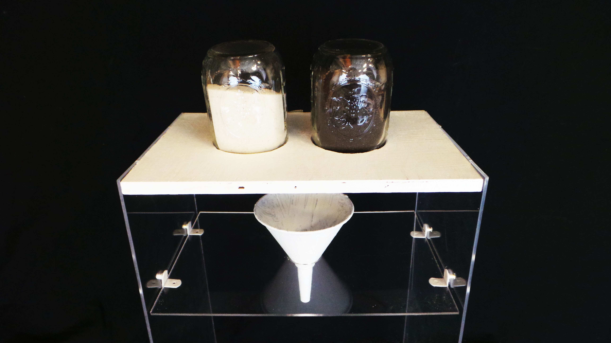
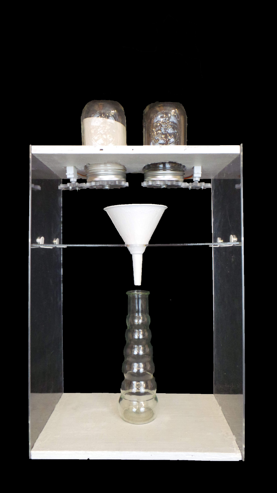
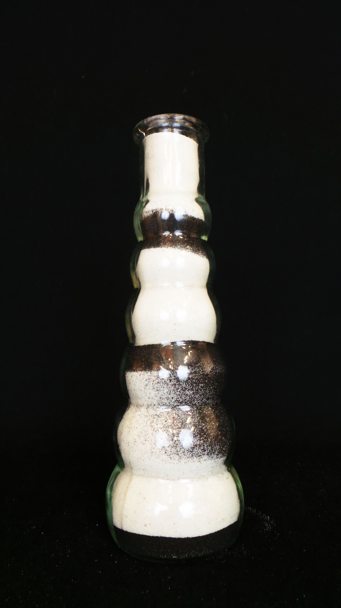
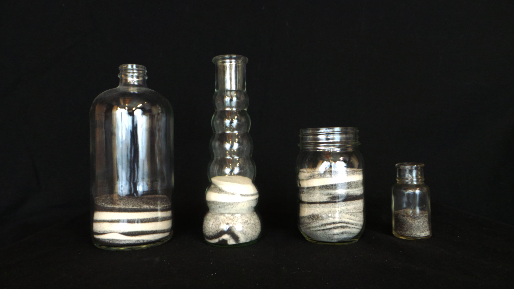

“All moments, past, present and future, always have existed, always will exist. The Tralfamadorians can look at all the different moments just that way we can look at a stretch of the Rocky Mountains, for instance. They can see how permanent all the moments are, and they can look at any moment that interests them. It is just an illusion we have here on Earth that one moment follows another one, like beads on a string, and that once a moment is gone it is gone forever.” – Kurt Vonnegut, Slaughterhouse-Five
Inspired by this quotation, I wanted to design a clock that transforms temporary and abstract time when important events happen (e.g. death/birth) into tangible artifacts — a clock that stores all moments.
I looked at different traditions, rituals, objects associated important life events: eating eggs dyed red after giving birth, ribbons for baby shower, etc. I liked the idea of sand in hourglass to represent the transience of time, so I decided to design a clock that use white and black sand to represent numbers of births and deaths, respectively, over time. Each day, the clock receives data on number of births and deaths that happened in the world that day. The ratio of these two numbers then determined how much sand is coming out of the jar with white sand and the jar with black sand. For example, if by the end of today, 450,000 babies were born, and 150,000 people passed away, the gate blocking white sand will open three times and the gate blocking black sand will open once, and sand would be dispensed into a glassware of the users’ choice. Over time, the sand pattern provides a visualization of the birth and death statistics. People can take the glassware away as a memento of time.







